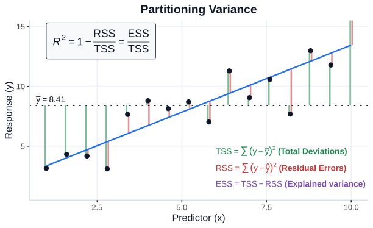
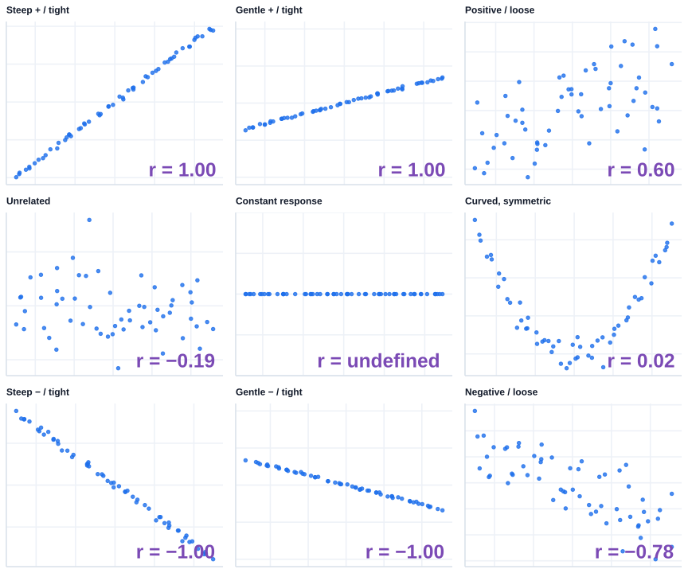
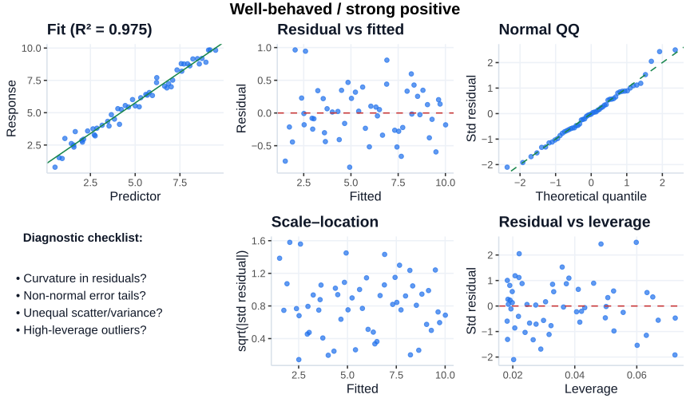
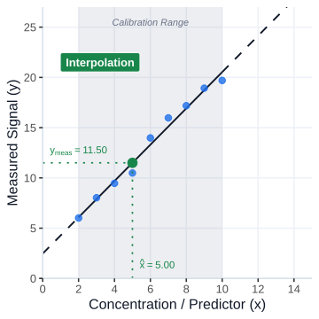
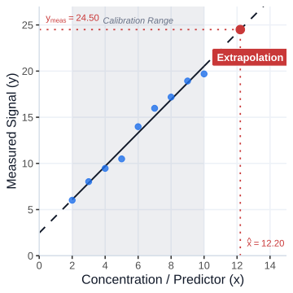
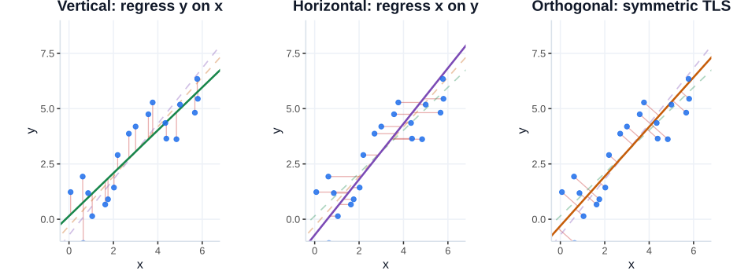

Covariance \(\text{Cov}(x,y) = \frac{1}{n-1}\sum_i(x_i-\bar x)(y_i-\bar y)\): Measures joint variation. Its units are \((\text{unit}_x \cdot \text{unit}_y)\), making it scale-dependent.
Correlation \(r\): Standardizes covariance by dividing out standard deviations. Unitless; unchanged by positive linear transformations. Undefined if either variable is constant.
A small worked example
Pearson correlation from five measurements
Cell size
Growth
10
2
12
3
14
3
16
5
18
6

\(R^2\) has an intuitive meaning of ratio of explained variance by the model
Positive, strong linear association in this sample.
Nine very different patterns
Correlation is not a slope detector

Same \(|r|\) can occur with steep or gentle slopes; a strong nonlinear relationship can have \(r\approx0\). A perfectly constant response has undefined \(r\).
Each gets a standard error and confidence interval.
Fit summaries
\(R^2,\;p\)
\(R^2\): fraction of sample variation explained. Slope \(p\): evidence against \(H_0:\beta_1=0\).
In simple OLS with an intercept, \(R^2=r^2\); this identity does not automatically hold for other models.
Three different uncertainty questions
The center line is not enough
Confidence band
Where might the unknown mean response line be?
\(E(y\mid x)\)
Prediction band
Where might a single new measurement fall?
\(y_{\mathrm{new}}\mid x\)
Tolerance band
Which range contains a specified fraction of the population with stated confidence?
\(95\%/95\%\)
Explore confidence, prediction, and tolerance
Repeated calibrations from the same generating model
sample size—
\(R^2\)—
\(p\)—
Tolerance limits are conservative pointwise normal-theory approximations, not a simultaneous calibration band. Observations are simulated; exact inference requires a validated assay model.
Use the calibration curve inversely
Unknown tablet concentration from UV absorbance
1: Point Prediction
\[\hat y = 0.050 + 0.075x, \quad A_{\mathrm{obs}} = 0.650\]
\[\hat x = \frac{0.650 - 0.050}{0.075} = \mathbf{8.0\text{ mg/L}}\]
Assigned Uncertainties: • Measurement error (known from measuring triplicate): \(\mathrm{SE}_{Abs} = 0.003\) • Intercept error (known from calibration): \(\mathrm{SE}_{\beta_0} = 0.040\) • Slope error (known from calibration): \(\mathrm{SE}_{\beta_1} = 0.002\)
Key Takeaway: The calibration parameters (\(\beta_0, \beta_1\)) account for over \(99.5\%\) of total variance (\(0.3299\text{ (mg/L)}^2\)), while the single-measurement assay noise (\(Abs\)) contributes less than \(0.5\%\) (\(0.0016\text{ (mg/L)}^2\)).
In this calculation covariance between parameters was ignored.
Assumptions are about errors
Classical simple OLS model
Conditional meanCorrect functional shape: the relationship is really linear
IndependenceMeasurement errors do not systematically depend on one another
Common varianceVariance is near-constant across calibration levels
Normal errors (for small-sample inference)The error term is approximately normal (with zero mean), individual observed values need not be normal
Inspect the diagnostics
Six simulated cases · fitted curve and diagnostic plots
Check residual patterns, not just \(R^2\).

Learn to recognize the warning signs
Residual vs fitted
Should show no systematic curvature and roughly comparable spread.
Normal QQ
Pronounced departures suggest skew/heavy tails or unusual observations.
Residual vs leverage
Large residuals at high-leverage \(x\) values merit influence assessment (e.g., Cook’s distance).
An excellent \(R^2\) can hide a misspecified model
Residual checks examine the assumptions that a good-looking fitted line alone cannot certify.
When does the intercept mean something?
Absorbance at zero API
Blank-corrected response should often be near zero; a nonzero intercept can suggest background or bias. Do not force zero without validation.
Blood pressure at zero height
Outside the meaningful physiological domain; the fitted intercept is a mathematical reference, not a real patient.
Interpret a coefficient only where its reference condition makes scientific sense.
Interpolation vs extrapolation
Interpolation
\(x\in[x_{\min},x_{\max}]\)

Inside the validated concentration range: still check precision, curvature, matrix effects.
Extrapolation
\(x\notin[x_{\min},x_{\max}]\)

Outside observed calibration levels: model form and analytical response may change.
Do not use a calibration line indefinitely
Dilute/reprepare an unknown to bring it into the validated calibration range when appropriate.
Transforming relationships
Part III
Not every useful relationship is straight
Sometimes a theory-motivated transformation makes fitting simpler.
Exponential\(y=a\,e^{b\,x}\) transforms to \(\log y=\log a+b\,x\) for \(y>0\), but error remains multiplicative on original scale.
Power / allometry\(y=a\,x^b\) transforms to \(\log y=\log a+b\,\log x\) for \(x,y>0\), but error remains multiplicative on original scale.
Inverse / hyperbolic\(y=\frac{a\,x}{b+x}\) transforms to \(\frac{1}{y}=\frac{1}{a}+\frac{b}{a}\,\frac{1}{x}\) but reciprocal transformation amplifies noise at low \(x\).
Logarithmic\(y=a+b\,\log x\) would transform to \(e^y=e^a\,x^b\), but we can just fit \(y\) versus \(\log x\) for \(x>0\).
Changing the scale changes the error model and what squared deviations mean. Direct nonlinear fitting is often preferable to transforming noisy response data.
Further generalizing the above relationships renders linear transformation impossible altogether. For example \(y=a\,e^{b\,(x-c)}+d\), where \(d\) represents a constant shift in the response and \(c\) a time lag in the measurement.
Least squares under the hood
Part IV
What is the computer minimizing?
Two points solve a line; more points demand a compromise.
\[
\hat{\boldsymbol\beta}=(X^\mathsf TX)^{-1}X^\mathsf T\mathbf y
\]
Displayed for full-column-rank \(X\); practical software uses numerically stable QR/SVD methods rather than explicitly computing the inverse.
Vertical or horizontal residuals?
Different errors-in-variables assumptions → different answers

Ordinary \(Y\)-on-\(X\) OLS minimizes vertical deviations, conditional on recorded \(x\). Horizontal regression and orthogonal/TLS target different losses; none by itself proves causal direction.
Nonlinear regression
Part V
When theory specifies a curved response
Potentiometric titration: iterative fitting instead of a closed-form line.
An illustrative sigmoid approximation to one transition, not a universal electrochemical titration equation. Here \(\Delta V\) is the volume difference obtained from difference titration, \(a_0\) is base of titration curve (should be at \(0\)), and \(D > 0\) controls titration step size.
For clarity the lower asymptote is held at \(0\) mL. The widget estimates \(\mathrm{p}K_a\) and step size; displayed parameter SEs are local linear approximations.
What nonlinear fitting changes
Specify the curve
Chemistry or physiology motivates the equation, not just convenient flexibility.
Find starting values
Iterative algorithms may converge slowly, fail, or reach a local solution.
Assess uncertainty
Inspect residuals, parameter SE/CI, identifiability; descriptive \(R^2\) is not enough.
Nonlinear regression can still minimize an SSE; what becomes nonlinear is the dependence of predictions on unknown parameters.
How do iterations move from starting values? Unlike linear regression—where linear algebra takes us straight to the exact global solution in one step (or via Dantzig’s simplex algorithm in linear programming)—nonlinear models require iterative optimization algorithms.
Gradient-guided vs. derivative-free search: Algorithms like the Damped Gauss-Newton (seen in our widget) or Levenberg-Marquardt use local gradient and curvature directions as a guide to nudge parameters toward lower SSE. When gradients cannot be calculated, derivative-free algorithms (e.g., Nelder-Mead, grid/random search, or evolutionary algorithms) explore the parameter space instead—an entire optimization discipline beyond our scope.
Multiple linear regression
Part VI
More than one explanatory variable
Condition on the other variables when interpreting a coefficient.
Linear in coefficients, even if nonlinear in the predictor. Polynomial regression is a general linear model, not nonlinear parameter fitting.
Can more flexible models always win?
Fit polynomials to the same sample
\(R^2\)—
AIC*—
best AIC degree—
*Within-sample Gaussian AIC with a common additive constant omitted; lower is preferred among these fits.
Good fit is not the whole goal
Training \(R^2\)
Never decreases when polynomial terms are added using the same observations.
Akaike Information Criterion
\(n\log(SSE/n)+2k\)
Rewards fit, penalizes parameters; choose the lowest score.
Scientific adequacy
Mechanism, residual diagnostics, parameter stability, and external validation still matter.
AIC scores have meaning only relative to comparable models fitted to the same observations and response scale. The formula shown omits a common Gaussian constant.
Hirotugu Akaike
Choose a modeling approach
Predict the best starting point
You measure absorbance at 8 known API concentrations, all using one solvent and one wavelength. Which starting model?
Choose an answer.
Interpret the model correctly
In \(SBP\sim\mathrm{weight}+\mathrm{height}\), what does the weight coefficient represent?
Choose an answer.
Read the diagnostic evidence
A line has \(R^2=0.95\), but residuals trace a pronounced U-shape. Best next step?
Choose an answer.
Interpolation or extrapolation?
Standards span 1–12 mg/L. An unknown gives a response corresponding to 21 mg/L. What is defensible?
Choose an answer.
Week 8 synthesis
AssociationScatterplots first; Pearson for linear and Spearman for monotonic patterns.